Matemática Discreta
Nessa seção voce irá aprender sobre Lógica Formal e Grafos
Lógica Formal Parte IV
Tautologias, Contradições e Contingências
1. TAUTOLOGIA
Uma tautologia é uma proposição composta cujo valor lógico é sempre verdade (V), independente dos valores lógicos das proposições simples que a compõem.
Na coluna de saída da tabela-verdade de uma tautologia, ocorre sempre o valor lógico V (verdade). Assim, se P(p1, p2, …, pn) é uma tautologia, seu valor lógico é V independente dos valores lógicos das proposições simples p1, p2, …, pn.
Uma tautologia é também chamada de proposição tautológica ou proposição logicamente verdadeira.
A afirmação “hoje é sábado ou não é sábado” é um exemplo de tautologia. Pois não há dúvidas de que seja verdadeira sempre, não importando qual dia seja hoje.
Vejamos o exemplo a seguir:
- a) A proposição ~ ( p ^ ~ p) é uma tautologia, como pode ser visto em sua tabela-verdade.
- b) A coluna de saída da tabela-verdade de p V ~ p só apresenta valor lógico V (verdade).
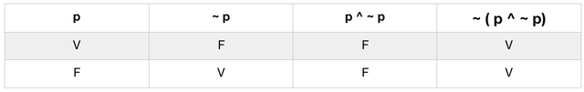
Observe que, na ultima coluna qual chamamos de coluna de saída da tabela verdade de ~ ( p ^ ~ p), só há o valor lógico V (verdade). Esse exemplo ilustra o princípio da não-contradição, apresentado anteriormente, e significa que a afirmação “uma proposição não pode ser simultaneamente verdadeira e falsa” é verdadeira.
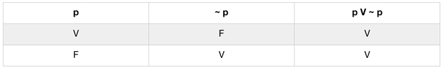
Logo, p V ~ p é uma tautologia. Veja que esse exemplo ilustra o princípio do terceiro excluído, o qual corresponde dizer que a afirmação “uma proposição ou é verdadeira ou é falsa” é necessariamente verdadeira.
2. CONTRADIÇÃO
Uma contradição é uma proposição composta cujo valor lógico é sempre falsidade (F), independente dos valores lógicos das proposições simples que a compõem.
Uma contradição também é chamada proposição contraválida ou proposição logicamente falsa.
Na coluna de saída da tabela verdade de uma contradição, ocorre sempre o valor lógico F (falsidade). Assim, o valor lógico de uma contradição P(p1, p2, …, pn) é F, independente dos valores lógicos das proposições simples P(p1, p2, …, pn).
A afirmação “hoje é sábado e hoje não é sábado” é contraválida, pois seu valor lógico é evidentemente falso, não importando qual dia seja hoje.
Vejamos alguns exemplos a seguir:
a) a proposição p ^ ~ p é uma contradição, conforme se vê por sua tabela-verdade.
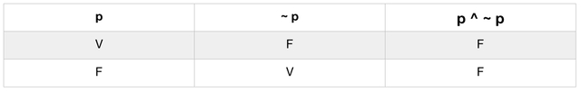
b) A proposição p ↔ ~ p é contraválida. Vejamos sua tabela verdade:
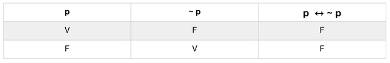
Como pode-se notar, a coluna de saída da tabela-verdade de p ^ ~ p só encerra o valor lógico falsidade. Esse exemplo ilustra o principio da não contradição, segundo o qual a afirmação “uma proposição não pode ser simultaneamente verdadeira e falsa” é necessariamente verdadeira.
Note que a última coluna da tabela-verdade de p ↔ ~ p só apresenta o valor lógico F (falsidade).
Um princípio bem útil na determinação de tautologias e contradições é o Princípio da Substituição, o que nos diz o seguinte:
“Seja P(p1, p2, …, pn) uma tautologia (contradição) qualquer. Se substituirmos as proposições P(p1, p2, …, pn) por outras proposições quaisquer (simples ou compostas) q1, q2, …, qn , então a nova proposição P(q1, q2, …, qn) que se obtém também é uma tautologia (contradição)”.
A demonstração do Princípio da Substituição é imediata e segue do fato que o valor lógico de uma tautologia é sempre V (verdade) e de uma contradição é sempre F (falsidade), quaisquer que sejam os valores lógicos de suas proposições componentes, ou seja, ser uma tautologia ou uma contradição depende apenas de como as componentes estão relacionadas, não dependendo de serem estas componentes verdadeiras ou falsas.
Como aplicação do Princípio da Substituição, a proposição (r → ~ s) V ~ (r → ~ s) é tautológica, pois é obtida da proposição, p V ~ p do exemplo b) da seção de Tautologia, por substituição da proposição p por r → ~ s. A Inserção de parêntesis é para garantir que a proposição obtida continue sendo a disjunção de uma proposição com sua negação.
3. CONTINGÊNCIAS
Uma contingência é uma proposição composta em cuja tabela-verdade ocorrem, na coluna de saída, os valores lógicos V (verdade) e F (falsidade).
Uma contingência é também chamada proposição contingente ou proposição indeterminada.
Na ultima coluna da tabela-verdade de uma contingência, devem ocorrer os valores lógicos V e F, cada um pelo menos uma vez.
Vejamos o exemplo a seguir:
- a) A proposição p V q → p ^ q é uma contingência, conforme pode ser visto em sua tabela-verdade. 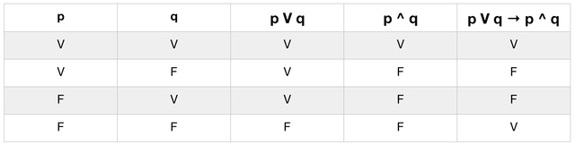
Perceba que a última coluna da tabela-verdade de p V q → p ^ q apresenta valores lógicos V (verdade) e F (falsidade).
Exercícios
Agora teste o seu grau de aproveitamento do conteúdo resolvendo os exercícios a seguir
TAUTOLOGIAS, CONTRADIÇÕES E CONTINGÊNCIAS
1. Determine se as seguintes proposições são tautológicas, contradições ou contingências utilizando a tabela-verdade:
- a) p → q ↔ ~ q → ~ p
- b) p ^ r → ~ q V r
- c) p → q ↔ p ^ ~ q
- d) ~ p ^ (p ^ ~ q)
- e) ~ p ^ r → q V ~ r
- f) p → r ↔ q V ~ r
Gabarito
Confira suas respostas
- a) Tautologia 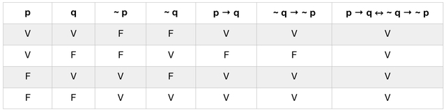
- b) Tautologia 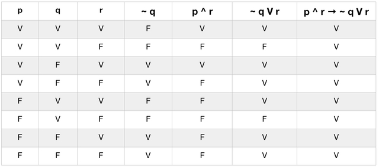
- c) Contradição 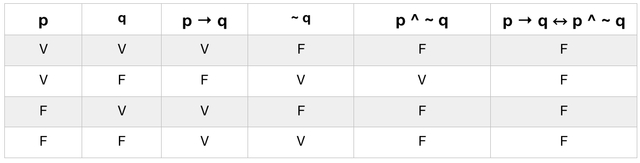
- d) Contradição 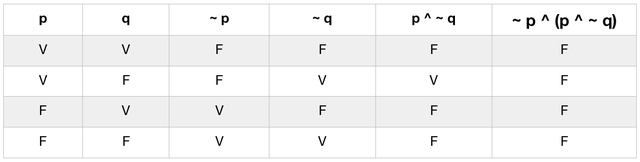
- e) Contingência 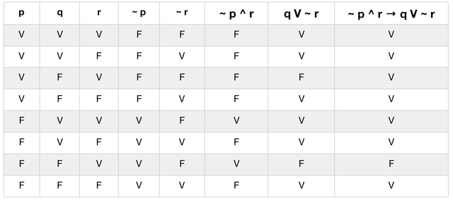
- f) Contingência 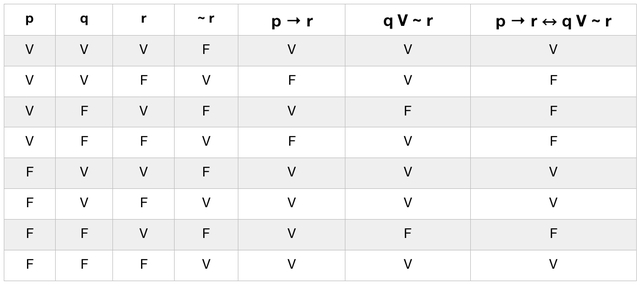